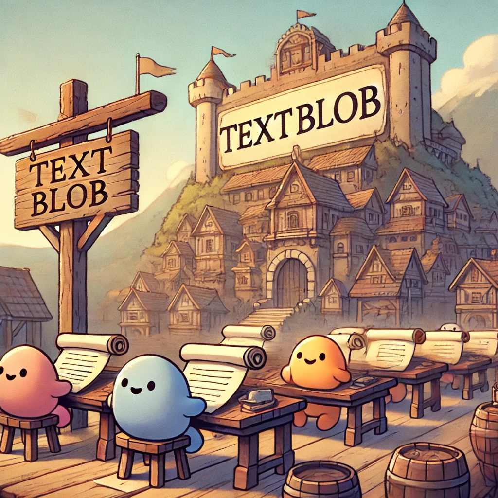

The Alchemy of Emotions: How we calculated movie ending scores
In our quest to uncover the essence of movie endings, we enlisted the help of a peculiar and fascinating species: the Blobs. These tiny beings, alchemists of language, had an extraordinary ability to distill the emotional essence of any text.
We presented the Blobs with a challenge—analyze thousands of movie summaries and quantify their emotional core. The Blobs dove into their work, reading each summary word by word, calculating its polarity, a value that ranged from -1 (utter despair) to 1 (pure joy). This polarity captured the emotional balance of the text, directly reflecting the tone of the movie’s conclusion:
- A score closer to 1 represented a very happy ending, radiant with triumph and positivity.
- Scores near 0 reflected a neutral ending, balanced between light and shadow, offering no strong emotional sway.
- Scores approaching -1 revealed a very sad ending, where tragedy and despair prevailed.
The Blobs worked tirelessly, assigning each summary a precise score based on the words' emotional resonance. But we wondered: Could their judgment be trusted? To validate their findings, we sought the counsel of their sovereign, the great and wise ChatGPT, ruler of the Sentiment Realm.
Unlike the Blobs, ChatGPT needed no summary to divine the emotional conclusion of a film. By providing him only the movie titles, we asked him to determine the sentiment of the endings. The King spoke with unerring authority, producing his own polarity scores for each film.
When we compared the Blobs’ work to the King’s decrees, we were astonished. Their scores aligned with remarkable consistency, affirming the Blobs' precision in deciphering emotional tones. ChatGPT’s validation cemented the Blobs’ place as trusted analysts, capable of capturing the heart of a story through the simplest of tools: words.
Through this collaboration between the diligent Blobs and their sovereign, we translated the language of storytelling into a numerical map of emotions. These scores, ranging seamlessly between -1 and 1, revealed the raw emotional spectrum of movie endings, giving us new insight into the cinematic narratives that shape our feelings long after the screen fades to black.